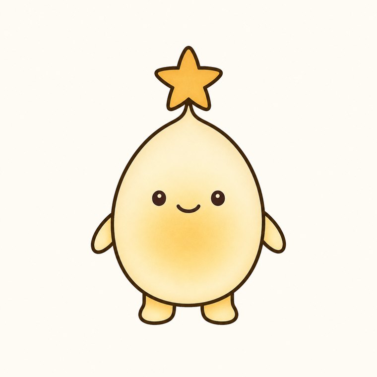
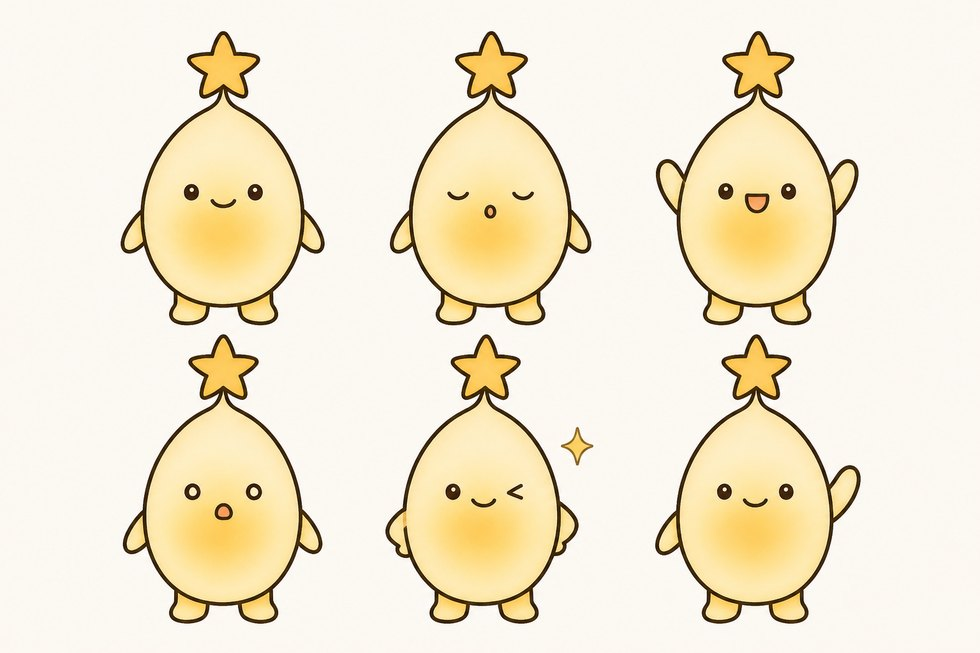
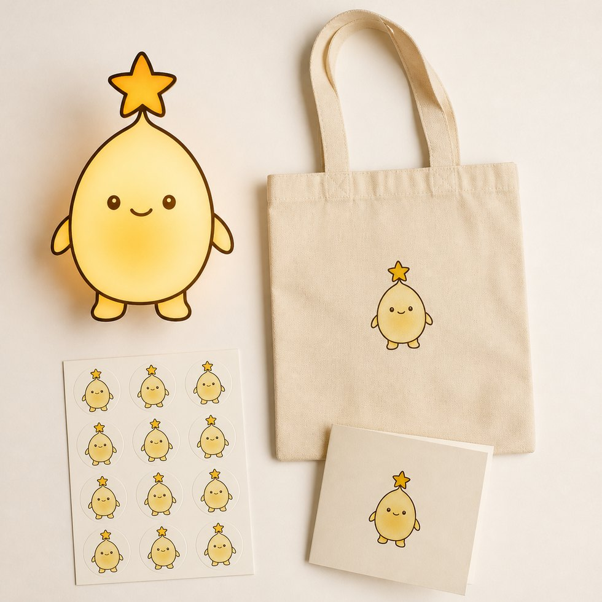

448자 · 캐릭터 소개부터
“서울의 밤, 낮은 책상 불빛 아래에서 태어난 작은 씨앗 정령 '빛씨'입니다.”
지금 접수창에 들어가 있는 문장
v2로 내면 됩니다.
캐릭터·그림은 그대로 두고, 접수창에 넣는 설명문 462자만 다시 썼습니다. 점수 100점 중 55점(활용성 30 + 적합성 25)이 이 문장에서 갈립니다.
원문 직접 확인 2026-11-21
“서울의 밤, 낮은 책상 불빛 아래에서 태어난 작은 씨앗 정령 '빛씨'입니다.”
지금 접수창에 들어가 있는 문장
“장학금을 주는 곳에서, 함께 걷는 곳으로. 서울미래인재재단의 새 얼굴 '빛씨'입니다.”
심사위원이 제일 먼저 보는 게 “재단과 맞나”라서, 그 답을 첫 문장에 놓았습니다
장학금을 주는 곳에서, 함께 걷는 곳으로. 서울미래인재재단의 새 얼굴 '빛씨'입니다. 서울의 밤, 다 꺼지지 않고 남은 책상 불빛이 뭉쳐 태어난 씨앗 정령입니다. 몸속에 빛을 품었지만 혼자서는 밝아지지 않습니다. 누군가와 같은 시간을 보낸 만큼만 머리 위 별이 자랍니다. 재단이 장학생 곁에 머문 시간만큼 자라는 캐릭터입니다. 크림·앰버·딥브라운 세 색과 한 가지 굵은 선으로만 그렸습니다. 실루엣은 달걀 하나와 별 하나로 끝나서, 인쇄도 자수도 이모티콘도 무드등도 같은 얼굴이 됩니다. 기본형·표정 6종·굿즈 목업은 이미 갖췄습니다. 24종 이모티콘, 장학증서 축하 모션, 합격 문자의 첫 줄, 느린 날의 로딩 화면, 시상식 입구의 조형물까지 같은 표정으로 이어집니다. 말버릇은 하나입니다. "천천히 가도 괜찮아요. 빛은 안 꺼져요." 첫 합격의 밤부터 마지막 졸업식까지, 꺼지지 않았다는 사실만 알려주는 얼굴이고 싶습니다.
이름·불빛·씨앗·별·3색·이모티콘·말버릇은 그대로 있고, 순서와 초점만 바꿨습니다.
v1서울의 밤, 낮은 책상 불빛 아래에서 태어난 작은 씨앗 정령 '빛씨'입니다.
v2장학금을 주는 곳에서, 함께 걷는 곳으로. 서울미래인재재단의 새 얼굴 '빛씨'입니다.
왜 심사위원이 3초 만에 궁금해하는 건 “재단과 맞나”입니다. 그 답을 맨 앞으로 옮겼습니다.
v1 이 내용이 없었습니다.
v2누군가와 같은 시간을 보낸 만큼만 머리 위 별이 자랍니다. 재단이 장학생 곁에 머문 시간만큼 자라는 캐릭터입니다.
왜 “또 씨앗 캐릭터 아니냐”는 말을 미리 막습니다. 다른 점을 생김새가 아니라 규칙에 두었습니다.
v1세 색만 써서 여러 곳에 같은 모습으로 확장되고, 한 컷 실루엣만으로도 알아볼 수 있습니다.
v2세 색과 한 가지 굵은 선으로만 그렸습니다. 실루엣은 달걀 하나와 별 하나로 끝나서, 인쇄도 자수도 이모티콘도 무드등도 같은 얼굴이 됩니다.
왜 “알아볼 수 있다”는 말 대신, 실제로 달걀 하나와 별 하나라는 사실을 적었습니다.
v1쓸 곳이 문장 뒤쪽에 한 번에 몰려 있었습니다.
v2기본형·표정 6종·굿즈 목업은 이미 갖췄습니다. 24종 이모티콘·축하 모션·합격 문자 첫 줄·로딩 화면·시상식 조형물까지 이어집니다.
왜 “지금 있는 것”과 “더 할 것”이 나뉘면, 심사위원이 둘 다 바로 확인합니다.
v1첫 장학금의 밤과 마지막 졸업식 사이, 모든 밤에 함께 있고 싶은 캐릭터입니다.
v2첫 합격의 밤부터 마지막 졸업식까지, 꺼지지 않았다는 사실만 알려주는 얼굴이고 싶습니다.
왜 말버릇 “빛은 안 꺼져요”와 같은 말로 끝나서, 기억이 한 곳에 모입니다.
“기본형·표정 6종·굿즈 목업은 이미 갖췄습니다. 24종 이모티콘, 장학증서 축하 모션, 합격 문자의 첫 줄, 느린 날의 로딩 화면, 시상식 입구의 조형물까지”
5개는 이미 만들었고 5개는 계획입니다
첫 문장(장학금 → 함께 걷는 곳) · “재단이 장학생 곁에 머문 시간만큼” · 마지막 문장
재단이 실제로 하는 일(장학·후원·시상식) 밖은 쓰지 않았습니다
“누군가와 같은 시간을 보낸 만큼만 별이 자랍니다”
생김새는 단순한 편이라, 다른 점을 규칙에 두었습니다
3색 · 한 가지 굵은 선 · “실루엣은 달걀 하나와 별 하나”
표정 6종 그림과 굿즈 사진이 직접 보여 줍니다
새벽에 메일을 연 학생이 제일 먼저 보는 얼굴. 별을 하나 켜 두고 기다립니다.
씨앗 → 새싹 → 별, 3초. 증서 위에서 한 번만 움직입니다.
느린 날 별을 하나씩 켜며 기다리게 하고, 404에서는 “길을 잃어도 빛은 있어요.”
씨앗 화분 + 스티커 + 손편지. 합격 통지와 같은 봉투에 들어갑니다.
합격·응원·고마워·졸려요. 표정 6종 그림에서 새로 그리지 않고 늘립니다.
장학생 하루를 빛씨 눈으로 한 컷. 시험 기간·취업 시즌에 맞춰 냅니다.
후원금이 어디로 갔는지 보여 주는 첫 장에 빛씨 도장.
1m 조형물, 별만 불이 켜집니다. 사진에서 사람 얼굴을 가리지 않는 높이.
몸속 빛이 실제로 켜지는 무드등. 색이 3개뿐이라 만들기 쉽고 쌉니다.
달걀과 별만 있어도 같은 얼굴로 보입니다.
표지·명찰·자리 안내판. 처음 오는 날 표정을 하나로 맞춥니다.
졸업생은 별이 다 큰 빛씨. 다음 씨앗을 떨어뜨리는 그림으로 이어집니다.
공개검증·본심사에서 실제로 나올 말만 골랐습니다. 답은 30초 안에 말할 길이입니다.


